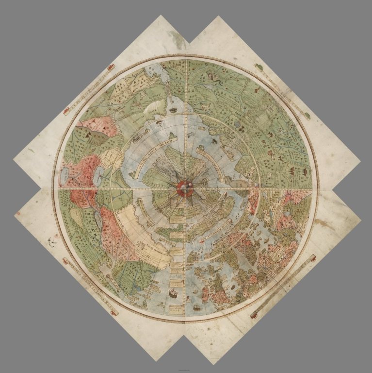

Obrázky nižšie ukazujú, ako bolo 60 listov a 4 rohové listy postupne spojené tak, aby vytvorili konečnú kompletnú planisféru. Prvý krúžok bol zo 4 listov, potom bol prvý krúžok pridaný k 2. krúžku z 8 listov, prvé a druhé krúžky pridané do 3. kruhu 12 listov, prvé, druhé a tretie krúžky pridané k 4. kruhu z 18 listov, prvý až štvrtý prstenec pridané do 5. kruhu 18 a nakoniec týchto 5 kruhov bolo pridaných do 4 rohových listov a štítkov, ktoré vytvárali kompletnú mapu.
